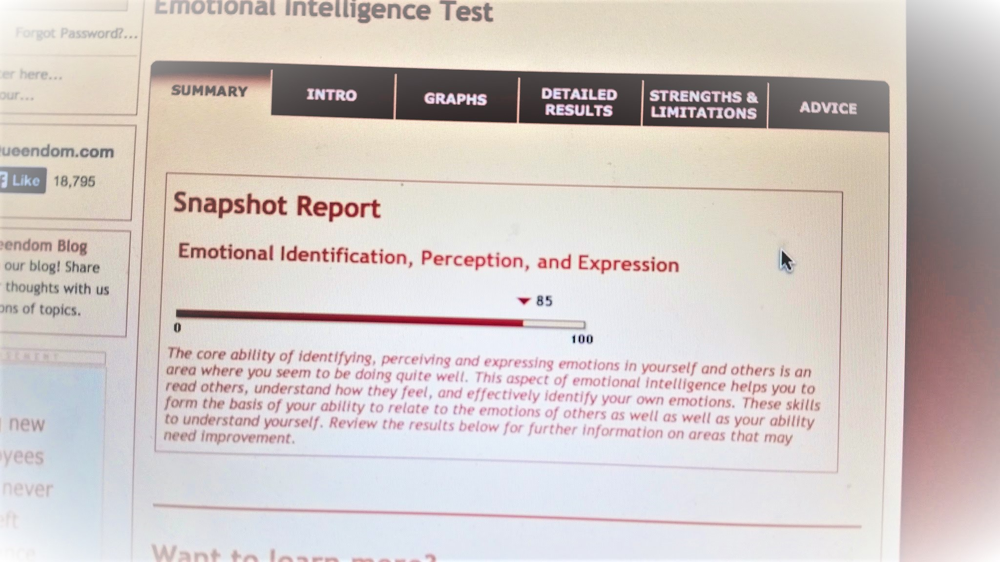

 I try to bring as much value as I can to whatever environment I find myself in. By nature, I am a fundamentalist, constantly seeking the unifying theory that explains and accounts for multiple paradigms. In practice and in trade, I am an engineer constantly working to solve problems by getting my hands dirty and putting the time in to create solutions. I value in others: emotional intelligence, a thirst for knowledge, a strong work ethic, and motivation to continually grow and improve.
Each day I work to improve my communication skills as well as my technical skills. The more I can improve these things while prioritizing mental and physical health the more I can contribute to the world and advance society to a type 1 civilization. Feel free to pop over to my about me section to learn more, and don't hesitate to contact me anytime.